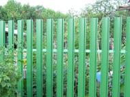
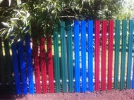
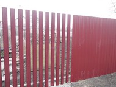

Частная территория – зона личного комфорта. Современные ограждения позволяют защититься от лишних взглядов, при этом украсив общий вид дома и участка. Металлический штакетник для забора один из самых современных вариантов ограждения. Конструкция представляет собой ограду, плоскость которой собрана из узких стальных профилей, по форме напоминающих деревянную доску. Высота планок различная, толщина листа 0,45 мм. Металлические детали забора с двух сторон проходят процедуру оцинкования с последующим нанесением ламинированного полимерного покрытия разного цвета. Горизонтальный стальной штакетник монтируется на некотором расстоянии друг от друга, что делает забор открытым. Такая контракция расширяет пространство, особенно актуально для небольших участков. Располагая элементы в шахматном порядке можно получить глухое ограждение.
|  |  |  |
| Варианты | Стоимость |
| Высота: 1.7 м Толщина листа: 0,45мм Окрашенный лист | 1600 |
| Ворота\Калитка | 2400 руб.\м2 |
| Монтаж забора из материалов заказчика | 450р.за погонный метр |
В стоимость не входят и оплачиваются отдельно: